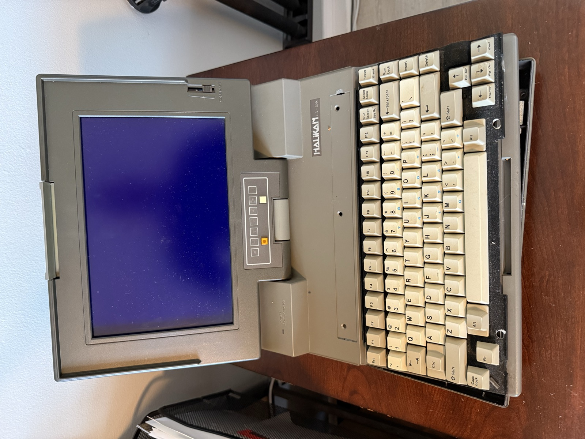
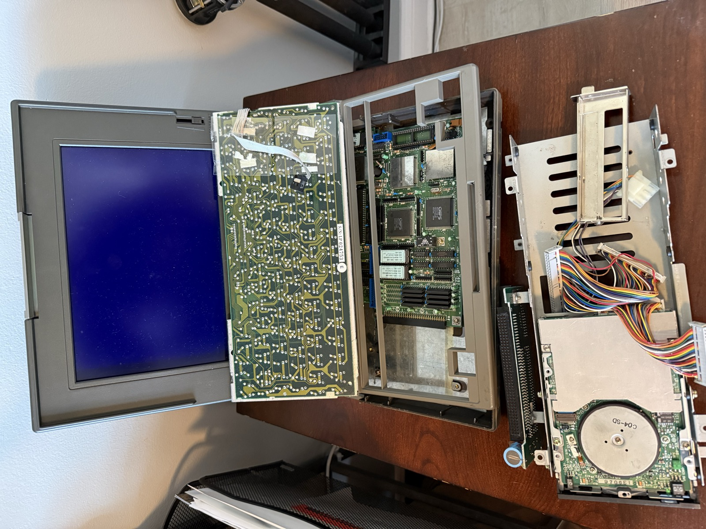
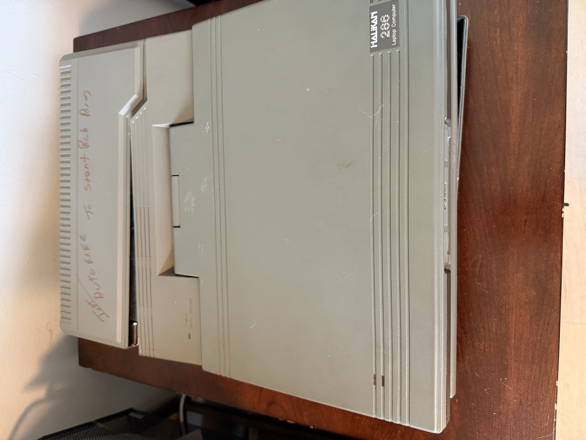
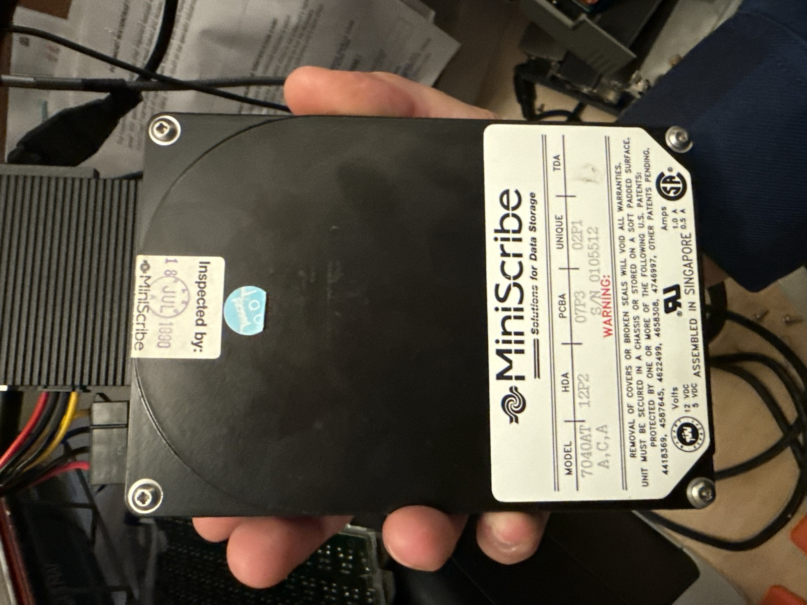
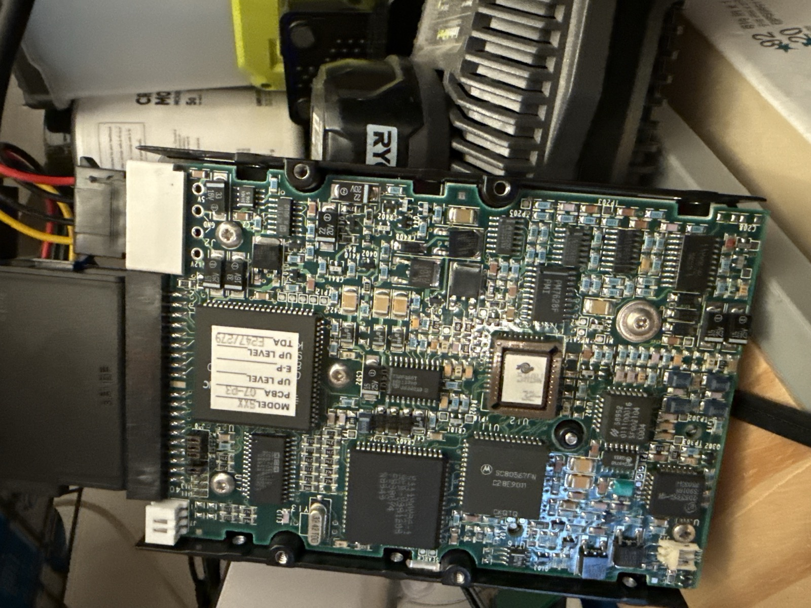
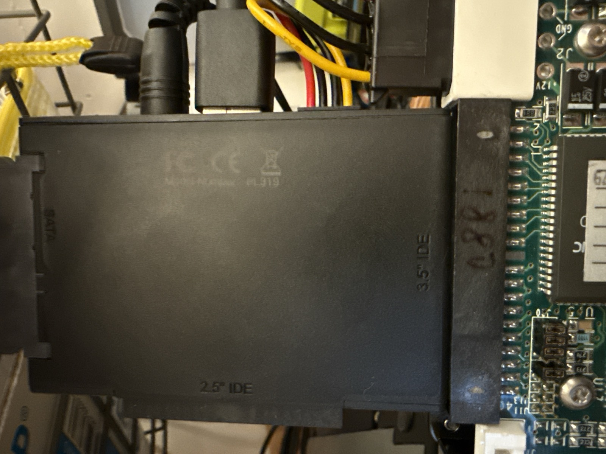
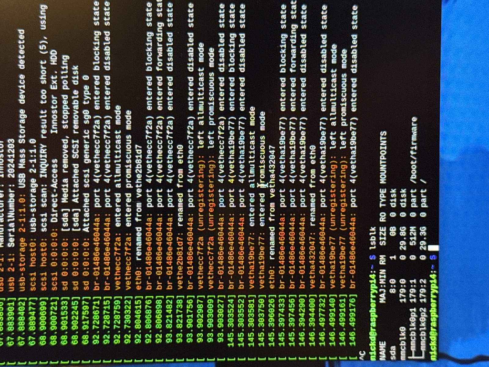

How a dead hard drive and a proprietary audio format couldn't stop a son from saving his father's voice
by Nick DeMarco
The Machine
Pop taught himself to program on a Radio Shack TRS-80, writing BASIC to solve a real problem: tracking collections from pinball machines, video games, jukeboxes, and vending machines across Long Island. He ran an amusement and vending business, and he needed software to manage the routes. He hired a couple of consultants — high school computer teachers — to help him get started, and from there he never stopped building.
When the PC era arrived, he ported everything over and kept going. He got into flying, joined GACE — Grumman Aerospace Civilian Employees — and dreamed up QTS-AIR, a telephone-based aircraft scheduling system. All of this was pre-internet. There was no Stack Overflow, no GitHub, no YouTube tutorials. Just manuals, trial and error, and stubbornness.
The Halikan 286 was a luggable — a 30-pound suitcase with a built-in CRT monitor, a full mechanical keyboard, and ISA expansion slots stuffed with hardware most people had never heard of. Pop used it as his demo machine, the one he could carry to the flying club to show off what he'd built. It ended up being the only surviving copy of his voice software — the Big Mouth sound card work, the QTS system, the bingo caller. Pop went on to build other things too, including the complete business software for Batter Up, a batting cage business on Long Island that's still running today, managed by my brother. But the voice recordings — Pop's actual voice — lived only on this machine.
Pop next to his Halikan 286, bingo application on screen. The Big Mouth voice card sits in one of the ISA slots behind that display.
What He Built
Once Pop got into flying, he came up with QTS-AIR — a voice-activated aircraft scheduling system for his flying club, GACE (Grumman Aerospace Civilian Employees), based at Islip airport on Long Island. Pilots could call in on a touch-tone phone and the computer would answer, speaking to them through a Big Mouth ISA sound card.
To make it work, he had to record his own voice. Every tail number in the fleet. Every digit. Every prompt. All in the NATO phonetic alphabet — Alpha, Bravo, Charlie — spoken clearly into a microphone and saved onto a 40-megabyte hard drive.
At the time, interactive voice technology was exotic — something you'd see in a corporate phone tree, not in a guy's basement. Pop built it from scratch. Members loved it. He went on to sell copies to other flying clubs, and his work was even written up in a private pilots' magazine.
Then he turned the same technology to something closer to home.
Thirty Years of Christmas Eve
Pop recorded all 75 bingo calls — B1 through O75 — individually, in his own voice. He wrote the caller software himself: randomized draws, a display board, voice playback through the Big Mouth card. On Christmas Eve, he'd set the Halikan on the table, boot it up, and the machine would call the game.
It became the tradition. Every Christmas Eve, after dinner, the family gathered around that table. Pop's voice coming out of that ancient machine. Kids, grandkids, great-grandkids — three generations, same game, same voice.
Christmas Eve bingo, ~2001. The Halikan sat at the head of the table, calling the game.
Thirty years. The machine never missed a Christmas.
The Last Game
Christmas 2025 was the first without Pop.
My brother Bud booted the Halikan one final time. The old CRT flickered to life. The DOS prompt appeared. And when the game started, Pop's voice filled the room — calling numbers like he'd done every Christmas Eve for as long as any of us could remember.
"This machine isn't going to last. If we don't do something, we lose his voice forever."
The Halikan was dying. You could hear it in the hard drive — the clicks, the hesitations. The CRT was dim. The keyboard was held together with tape. It had outlasted its era by decades, but it wasn't going to outlast another year.
Going Dark
I brought the Halikan home after the holidays. I'd save what was on it. How hard could it be?
I plugged it in. Hit the power switch. The fan spun up. The drive clicked. The screen lit up — a flat, dead blue. Nothing else. No boot. No DOS. No bingo. Just a blue void.

The Halikan open. The screen lit up blue and stayed there — no boot, no DOS, nothing.
Pop's voice was trapped inside a machine that would no longer speak.
Inside the Machine
If it wouldn't boot, I'd go in after the data. I opened the case and started taking it apart — piece by piece, card by card, cable by cable.

Fully disassembled. The motherboard, ISA slots, drive cage — all exposed. A machine built before most people had heard the word "internet."
Inside the lid, I found something that stopped me cold: Pop's handwriting. Notes to himself, in red marker, from decades ago. Instructions for how to operate his own software. He'd written them there so he'd never forget — a user manual, scrawled on the inside of the case, for a machine only he understood.

Pop's handwriting on the case lid — instructions to himself from decades ago, in red marker.
At the bottom of the chassis, bolted into a metal cage: a single 40-megabyte IDE hard drive. Built before the web existed. Holding a voice from the 1980s.
The Drive
The MiniScribe 7040AT. 40 megabytes. Serial number 010512. Inspected July 18, 1990. Assembled in Singapore.

MiniScribe 7040AT — 40MB, inspected July 18, 1990. The company went bankrupt that same year. The drive outlived it by 35 years.
MiniScribe was a Colorado hard drive manufacturer that went bankrupt in 1990 — the same year this drive was inspected. The company was destroyed by an accounting fraud scandal. But this one little drive kept spinning, year after year, Christmas after Christmas, in a machine in my parents' living room.

The underside — Motorola controller chips, 1990 vintage. A piece of storage technology older than most of the people who'd eventually hear it play.
The First Attempt
I connected the MiniScribe to a USB-to-IDE adapter on a Raspberry Pi 4. Old drives like this use a 40-pin IDE interface — extinct in modern computers, but a $15 adapter bridge can translate it to USB.

The MiniScribe plugged into a 3.5" IDE-to-USB adapter. A 1990 drive meeting 2025 technology.
Linux detected it immediately:
USB Mass Storage device detected
My heart jumped. It was alive. Then:
scsi scan: INQUIRY result too short (5), using 36
The drive was responding — but it couldn't be read. The SCSI inquiry returned too few bytes. The sectors were there, somewhere, but the drive couldn't deliver them reliably. It was alive... but barely. Not something you DIY.

The Pi's dmesg output — detection, then failure. The drive was talking, but it couldn't say enough.
The Recovery
I sent the drive to SalvageData in Cleveland — a professional data recovery lab with clean rooms and specialized equipment for drives that can't be read through normal means.
Weeks passed. Then the call:
"Good news! We are able to recover your data."
83 files from C:\BINGO, dated December 21, 1995. BINGO.EXE. BINGOCARD.EXE. 75 voice files with no file extensions. A handful of configuration files with the extension .QTS. Everything Pop had built — frozen in time on a drive that almost didn't make it.
Cracking the Code
The files were back. But they weren't audio files — not in any format a modern computer could play. No WAV headers. No MP3 encoding. No metadata. Just raw binary, recorded in a proprietary format for a sound card nobody's heard of since the early 1990s.
The Big Mouth ISA sound card used its own recording format — undocumented, with no surviving specification. To play these files, I'd have to reverse-engineer the encoding from raw bytes.
I tried everything. 8-bit, 16-bit. Signed, unsigned. PCM, mu-law, A-law. Every standard sample rate — 8000, 11025, 22050. Seven iterations of a decoder. Each time: static. Noise. Garbled nonsense.
The parameters I was looking for: 8-bit unsigned PCM, delta-encoded, 11.025 kHz mono. Delta encoding meant each byte wasn't a sample — it was the change from the previous sample. An accumulator pattern, where you build the waveform one step at a time.
I didn't know that yet. All I had was static.
"B... Seven."
After an hour of noise — after seven failed decoders, after adjusting every parameter I could think of — I ran the delta-encoded version one more time. And something came through.
"My heart stopped. That was my dad's voice."
The parameters locked in. The static melted away. One by one, I decoded all 75 files. Every call, clear as the day he recorded them — sometime in the 1980s or early '90s, sitting in front of that Halikan, speaking into a microphone connected to a sound card that no longer exists.
Pop's voice. Clear as the day he recorded it. Preserved on a bankrupt company's hard drive, encoded in a dead format, for a sound card that hasn't been manufactured in thirty years. And now it's back.
Preserved Forever
The voice is safe now. Backed up to the cloud. Playable in a web browser. The bingo game itself has been rebuilt as a modern web app — same calls, same voice, same game — so the family can keep playing, whether they're in the same room or across the country.
The original DOS software runs in a browser emulator too. You can boot into MS-DOS 5.0, navigate to C:\BINGO, and run the same program Pop wrote. The Big Mouth card is emulated. His voice comes through the speakers, just like it did on Christmas Eve.
Pop never sat me down and taught me to program. He didn't give me lessons. But I watched him — for years — sit in front of that machine and figure things out. No manual. No help desk. No internet. Just a problem and the stubbornness to solve it. He taught himself BASIC on a TRS-80, built a voice-activated phone system in his basement, wrote business software that's still running 30 years later. He never stopped building.
Because of him, I fell in love with what computers could do. I graduated from Northeastern University in Boston as an Electrical Engineer and went on to spend 30 years in the EDA software industry — building the tools that other engineers use to design electronics. That career started in his living room, watching him work.
That's what he taught me — not any one skill, but the refusal to quit. When the drive wouldn't boot, I didn't quit. When the data came back in a format nobody could read, I didn't quit. When six decoders produced nothing but static, I didn't quit. Because that's not what he would have done.
Pop built things that outlasted him. Now his voice will too.